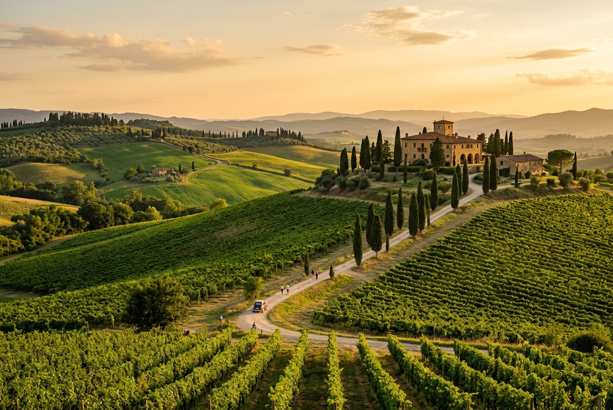

Wines & Prosecco
From the rolling hills of Veneto to the volcanic soils of Sicily, our wine selection spans the full breadth of Italian viticulture. We specialise in Prosecco DOC and DOCG, alongside still and sparkling wines curated for the international professional buyer.